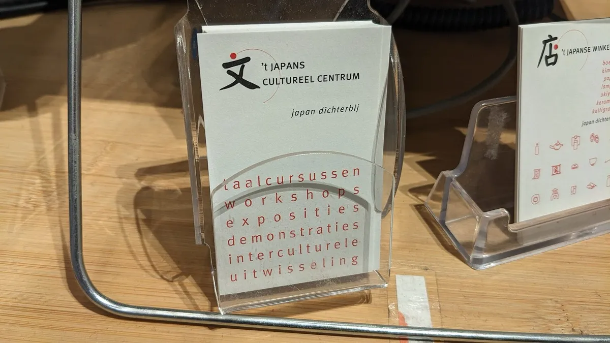
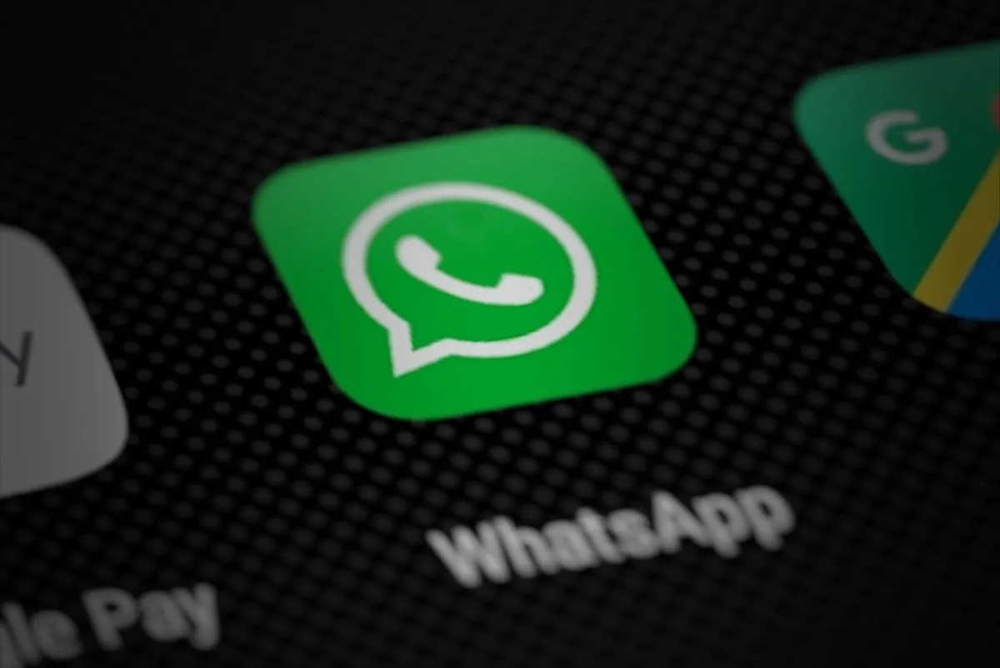

Tarjeta de presentación NFC: la tarjeta digital que se comparte con un toque
Qué es una tarjeta de presentación NFC, ventajas frente al papel, qué enlace ponerle (LinkedIn, WhatsApp, Instagram) y cómo elegir una sin mensualidades.

En resumen
- Una tarjeta de presentación NFC abre tu LinkedIn, WhatsApp o portafolio con un toque, sin apps.
- No se regala: se muestra. Tú te quedas con la tarjeta y la otra persona se lleva tu contacto.
- Elige el enlace según tu objetivo: LinkedIn para networking, WhatsApp para vender, Instagram para mostrar tu trabajo.
- Evita las tarjetas que dependen de una suscripción: si dejas de pagar, dejan de funcionar.
Contenido del artículo
Las tarjetas de presentación de papel tienen un problema que todos conocemos: se reparten cientos, se guardan pocas y casi nadie captura los datos. Si cambias de puesto o de número, todas quedan obsoletas. Por eso cada vez más profesionistas y equipos de ventas en México usan una tarjeta de presentación NFC: una tarjeta digital que, con un toque, abre tu perfil de LinkedIn, un chat de WhatsApp o tu página de contacto. En esta guía te explicamos cómo funciona, qué poner en ella y cómo elegir la correcta.
Qué es una tarjeta de presentación NFC
Es una tarjeta del tamaño de una tarjeta de crédito con un chip NFC y, en las buenas, también un código QR impreso. El chip guarda un enlace. Cuando otra persona acerca su celular, el teléfono lee el chip y abre ese enlace al instante: tu perfil profesional, tu WhatsApp, tu portafolio o tu sitio web. No necesita batería ni que la otra persona descargue una app. Si quieres entender la tecnología a fondo, lee qué es una tarjeta NFC y cómo funciona.
Tarjeta de papel vs. tarjeta NFC
| Tarjeta de papel | Tarjeta NFC | |
|---|---|---|
| Qué tiene que hacer la otra persona | Guardarla y capturar tus datos a mano | Acercar su celular |
| Si cambias de puesto o número | Hay que reimprimir | Actualizas tu perfil y la tarjeta sigue sirviendo |
| Cuántas necesitas | Cientos (se entregan) | Una (se muestra y se guarda) |
| Qué comparte | Lo que cabe impreso | Un perfil completo con foto, experiencia y contacto |
| Impresión que deja | Tradicional | Moderna y memorable |
La gran diferencia es de lógica: la tarjeta de papel se regala; la tarjeta NFC se muestra. Tú te quedas con ella y la otra persona se lleva tu contacto en su celular.
Qué enlace poner en tu tarjeta
LinkedIn: para networking profesional
Ideal para congresos, juntas, entrevistas y ventas B2B. La otra persona abre tu perfil y te agrega como contacto. Antes de pedir tu tarjeta, personaliza tu URL pública (por ejemplo, linkedin.com/in/nombre-apellido). Según la ayuda de LinkedIn, las URL personalizadas se asignan por orden de llegada, solo puedes tener una a la vez y puedes cambiarla hasta cinco veces en seis meses. Elige una definitiva: si la cambias, el enlace anterior deja de funcionar. Ver la tarjeta NFC para LinkedIn.
WhatsApp: para cerrar ventas
Si tu negocio vive de cotizaciones y pedidos por WhatsApp, esta es la opción más directa: la tarjeta abre un chat contigo sin que el cliente tenga que guardar tu número. Puedes agregar un mensaje inicial como «Hola, nos conocimos en la expo». Ver la tarjeta NFC para WhatsApp.

Instagram o TikTok: para creativos
Fotógrafos, diseñadores, maquillistas, chefs y artistas: tu trabajo se vende mejor con imágenes. Una tarjeta que abre tu perfil de Instagram o TikTok funciona como portafolio de bolsillo.
Tu página de contacto o sitio web
Si tienes una página con todos tus datos (teléfono, correo, dirección, redes), la tarjeta puede abrirla. Es la opción más completa, siempre que la página cargue rápido en celular.
Quién la usa y para qué
- Vendedores y ejecutivos de cuenta: comparten WhatsApp o LinkedIn en cada visita.
- Agentes inmobiliarios y de seguros: WhatsApp para dar seguimiento inmediato.
- Médicos, dentistas y abogados: WhatsApp para agendar o la reseña de Google para generar confianza.
- Reclutadores: LinkedIn en ferias de empleo.
- Freelancers y creativos: Instagram, TikTok o portafolio.
- Equipos completos: una tarjeta por persona, cada una con su propio enlace.
Cómo usarla sin parecer raro
La primera vez que muestres tu tarjeta, la otra persona probablemente no sepa qué hacer. Estas frases funcionan bien:
- «Acerca tu celular a la tarjeta y te aparece mi LinkedIn».
- «Si tu teléfono no la lee, escanea el QR con la cámara».
- «Así no se te pierde mi tarjeta: te queda el contacto directo».
Sostén la tarjeta quieta y deja que la otra persona acerque la parte superior de su iPhone o el centro de la espalda de su Android. Si tiene una funda gruesa o metálica, que use el QR.
Cómo elegir una buena tarjeta de presentación NFC
- Que tenga NFC y QR: así funciona con cualquier celular, incluso sin NFC o con NFC apagado.
- Sin mensualidades: muchas tarjetas «digitales» dependen de una plataforma de suscripción; si dejas de pagar, la tarjeta deja de funcionar. Una tarjeta programada con tu enlace directo no tiene ese riesgo.
- Configurada antes de enviarla: que llegue lista para usar, sin apps.
- Tamaño estándar: 85.6 × 54 mm, para que quepa en cualquier cartera.
Conclusión
Una tarjeta de presentación NFC no reemplaza el apretón de manos, pero sí resuelve el momento en que se pierden la mayoría de los contactos: después. Elige el enlace que mejor sirve a tu objetivo (LinkedIn para networking, WhatsApp para vender, Instagram para mostrar tu trabajo) y deja que cada conversación termine con un contacto guardado. Si tienes un equipo, escríbenos para cotizar mayoreo.
Preguntas frecuentes
¿Qué es una tarjeta de presentación NFC?
Es una tarjeta con un chip NFC (y normalmente un código QR) que abre tu perfil profesional, tu WhatsApp o tu sitio web cuando alguien acerca su celular, sin necesidad de apps.
¿La otra persona necesita una app?
No. Los iPhone XS y posteriores y la mayoría de los Android con NFC leen la tarjeta de forma nativa. Para los demás, el código QR se escanea con la cámara.
¿Qué pasa si cambio de trabajo?
Si la tarjeta abre tu LinkedIn, solo actualizas tu perfil y la tarjeta sigue funcionando. Evita cambiar tu URL personalizada, porque el enlace anterior dejaría de funcionar.
¿Tiene mensualidades?
Las tarjetas de TarjetasNFC son de pago único y se programan con tu enlace directo, así que no dependen de ninguna suscripción.
Fuentes y referencias
- Administrar la URL de tu perfil público — Ayuda de LinkedIn
- NFC Forum — NFC Forum
- Adding support for background tag reading — Apple Developer Documentation
- Near field communication (NFC) overview — Android Developers
Las marcas mencionadas pertenecen a sus respectivos dueños. Las imágenes provienen de Wikimedia Commons y se usan según su licencia libre, indicada en cada pie de foto.

Diseñamos y programamos tarjetas NFC con código QR para negocios de todo México. Escribimos estas guías con base en la documentación oficial de Google, Apple y Android y en lo que aprendemos todos los días con nuestros clientes.
Contáctanos · Cómo funcionan nuestras tarjetas